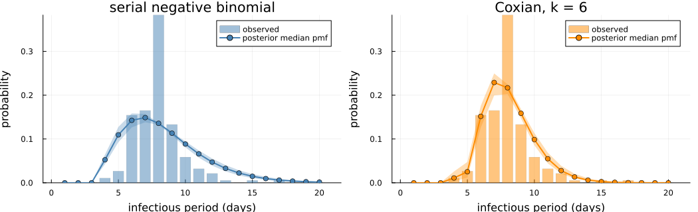
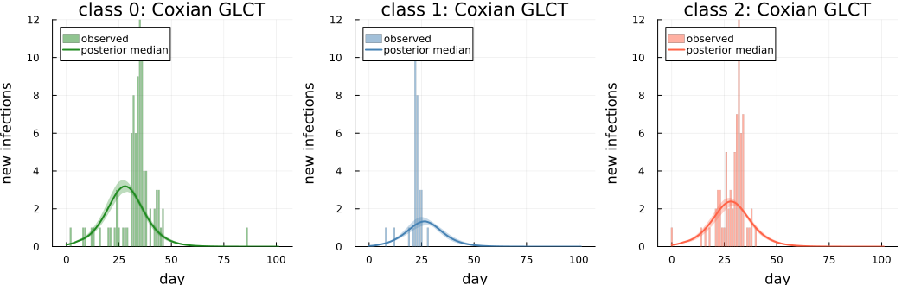

Measles in Hagelloch, 1861: a custom three-group model
The output on this page was precomputed using the manuscript's MCMC settings, with a target acceptance rate of 0.95, and is displayed without being re-evaluated. To rerun it, see Reproducibility.
This vignette reproduces the Hagelloch analysis of the manuscript. It is also the package's worked example of a custom multi-group model. The standard workflow (DDSAModel, fit_ddsa) covers one population; here three groups with their own force of infection are written as a Turing model from the building blocks: forward_map with a callable force of infection, ddsa_loglikelihood per group, recovery_loglik, and the integer-parameter helpers NGrid and marginal_r_loglik.
The question
The 1861 measles outbreak in Hagelloch (188 cases among the village children) was analysed at the individual level by Neal & Roberts (2004, "NR"), whose model $M_\theta$ has within-class, household and global transmission. Can a mean-field DDSA analogue with three groups recover the qualitative structure of that model? The groups are the school classes:
- class 0: children not yet at school (pre-school);
- class 1: the younger school class;
- class 2: the older school class, which contains the index case.
The questions are whether the fit gives $\beta_{C1} > \beta_{C2}$ for the within-class rates of classes 1 and 2, a household rate $\beta_H > 0$ from the school classes to class 0, the right order of the three epidemics, and the group sizes $N_0, N_1, N_2$. NR treat the group sizes as known; DDSA infers them from the final-size terms. The same model is fitted with the GLCT and the Boxcar forward maps, and their agreement checks the implementation.
The last section goes beyond the manuscript's analysis. It replaces the serial negative binomial infectious period with a Coxian discrete phase-type distribution on the same GLCT map, which removes the bound on its number of stages.
using DiscreteDynamicSurvivalAnalysis
using CSV, DataFrames, Distributions, Turing, MCMCChains
using LinearAlgebra, Random, Statistics
using Plots, StatsPlots, Measures
const FULL = get(ENV, "DDSA_FULL", "false") == "true"
t_start = time()All fits here use NUTS with a target acceptance rate of 0.95 rather than the manuscript's 0.8. At 0.8 the Coxian fit makes divergent transitions; smaller steps avoid them, and using them for every fit keeps the fits comparable.
const NDRAWS = FULL ? 2000 : 100 # draws per chain after adaptation
const NCHAINS = FULL ? 4 : 2
const SAMPLER = NUTS(FULL ? 1000 : 100, 0.95; max_depth = 12, Δ_max = 1000.0)
const NPPC = FULL ? 200 : 100 # posterior draws used for the predictive checks
(; FULL, NDRAWS, NCHAINS, SAMPLER, NPPC, threads = Threads.nthreads())(FULL = true, NDRAWS = 2000, NCHAINS = 4, SAMPLER = Turing.Inference.NUTS{ADTypes.AutoForwardDiff{nothing, Nothing}, AdvancedHMC.DiagEuclideanMetric}(1000, 0.95, 12, 1000.0, 0.0, ADTypes.AutoForwardDiff()), NPPC = 200, threads = 10)Inputs
The line list is distributed with the package (see data/README.md for its provenance). The column t_infection is the prodrome onset in days since the first prodrome, and inf_period is the infectious period with NR's offset already added: infectious from 1 day before prodrome until 3 days after rash onset, so inf_period = t_rash − t_infection + 4.
df = CSV.read(example_data_path(:hagelloch), DataFrame)
cls = parse.(Int, string.(df.class)) # the column may parse as Int or String
classes = [df[cls .== c, :] for c in 0:2]
first(df[:, [:case_ID, :infector, :class, :t_infection, :t_rash, :inf_period]], 5)| Row | case_ID | infector | class | t_infection | t_rash | inf_period |
|---|---|---|---|---|---|---|
| Int64 | DataStri… | Int64 | Int64 | Int64 | Int64 | |
| 1 | 1 | 45 | 1 | 22 | 26 | 8 |
| 2 | 2 | 45 | 1 | 24 | 28 | 8 |
| 3 | 3 | 172 | 0 | 29 | 33 | 8 |
| 4 | 4 | 180 | 2 | 28 | 29 | 5 |
| 5 | 5 | 45 | 1 | 23 | 28 | 9 |
The three groups share one calendar grid. As in the manuscript, the grid covers the last infection (day Tmax) plus about two mean infectious periods.
Tmax = maximum(df.t_infection)
nsteps = Tmax + 2 * round(Int, mean(df.inf_period))
groups = [linelist(d.t_infection, d.t_infection .+ d.inf_period; nsteps = nsteps) for d in classes]3-element Vector{LineList}:
LineList(nsteps = 102, Δt = 1.0, final_size = 90, known infection times = 90, recovery intervals = 90)
LineList(nsteps = 102, Δt = 1.0, final_size = 30, known infection times = 30, recovery intervals = 30)
LineList(nsteps = 102, Δt = 1.0, final_size = 68, known infection times = 68, recovery intervals = 68)Each group is a LineList on the same nsteps-day grid (day d is step d + 1). The recovery intervals are pooled over the groups, because the infectious period is shared.
delta = reduce(vcat, [g.recovery_intervals for g in groups])
K0, K1, K2 = (g.final_size for g in groups)
(; K0, K1, K2, nsteps, mean_delta = mean(delta), min_delta = minimum(delta),
max_delta = maximum(delta), cv_delta = std(delta) / mean(delta))(K0 = 90, K1 = 30, K2 = 68, nsteps = 102, mean_delta = 7.946808510638298, min_delta = 4, max_delta = 17, cv_delta = 0.21882175545294807)The coefficient of variation of the recovery intervals (≈ 0.22) is far below the ≈ 0.94 of a geometric distribution with the same mean, so the infectious period is modelled as a negative binomial (DPH) distribution.
Infection-time histograms of the three groups:
ymax = maximum(maximum(g.infection_counts) for g in groups)
plot([bar(0:(nsteps - 1), g.infection_counts; title = t, color = c, alpha = 0.7, label = "",
xlabel = "day", ylabel = "new infections", ylims = (0, ymax))
for (g, t, c) in zip(groups, ["class 0 (pre-school)", "class 1 (younger)", "class 2 (older)"],
[:forestgreen, :steelblue, :tomato])]...;
layout = (1, 3), size = (1050, 300), left_margin = 4mm, bottom_margin = 4mm)
The infector column (NR's reconstruction of who infected whom) shows that most pre-school cases were infected by a school child, which motivates the household term $\beta_H$.
class_of = Dict(zip(df.case_ID, cls))
infector_class = [get(class_of, something(tryparse(Int, string(x)), -1), missing) for x in classes[1].infector]
(from_school = count(c -> !ismissing(c) && c in (1, 2), infector_class),
from_class0 = count(c -> !ismissing(c) && c == 0, infector_class),
unresolved = count(ismissing, infector_class), K0 = K0)(from_school = 53, from_class0 = 34, unresolved = 3, K0 = 90)Model configuration
Force of infection: the callable foi interface
For G groups, forward_map takes a vector ρ of initially infected fractions and a force of infection foi that maps the vector I of infected fractions (one per group) to one infection rate per group. Group $k$ then has new infections $(1 - e^{-\mathrm{rate}_k \Delta t}) S_k$ per step, where $S_k$ is its susceptible fraction and $\Delta t = 1$ day the step length. A matrix B gives B * I; any callable works, for example a closure over the parameters. The analogue of NR's $M_\theta$ (household, two classroom and one global term, with the spatial decay switched off) is:
mtheta_foi(β_C1, β_C2, β_H, β_G) = I -> begin
Itot = I[1] + I[2] + I[3]
[β_H * (I[2] + I[3]) + β_G * Itot, # class 0: household route from school children + global
β_C1 * I[2] + β_G * Itot, # class 1: within class 1 + global
β_C2 * I[3] + β_G * Itot] # class 2: within class 2 + global
endmtheta_foi (generic function with 1 method)The closure must accept vectors of ForwardDiff Duals, because NUTS differentiates through the map. A matrix would do here too, since this force of infection is linear in I. A callable is needed for non-linear forces of infection (e.g. saturating contact rates).
The global term $\beta_G (I_0 + I_1 + I_2)$ includes all three groups, so pre-school children also infect school children through $\beta_G$. The next-generation matrix used below for the basic reproduction number $R_0$ uses the same rates.
Infectious period
The calendar infectious period $\delta$ has a minimum of $\delta_{\min} = 4$ days (NR's offset). It is a negative binomial with $r$ stages, preceded by $\delta_{\min} - r$ deterministic one-day states (dph_negative_binomial_min_support), so its support is $\{\delta_{\min}, \delta_{\min} + 1, \ldots\}$. NUTS samples its mean $E[\delta]$, and $p = r / (E[\delta] - \delta_{\min} + r)$; $r \in \{1, \ldots, \delta_{\min}\}$ is summed out.
δ_floor = minimum(delta)
r_max = δ_floor
dph_nominal = dph_negative_binomial_min_support(r_max, r_max / (mean(delta) - δ_floor + r_max), δ_floor)
(; δ_floor, r_max, mean = mean(dph_nominal))(δ_floor = 4, r_max = 4, mean = 7.946808510638297)The Boxcar map needs a number of infection-age classes. As in the manuscript it is the 99.99th percentile of a nominal infectious period (dph_nominal: $r = \delta_{\min}$ and $E[\delta]$ equal to the mean recorded interval), but at least 40. The hazard is the exact one of $\min(\delta, K_{\text{age}})$ (truncation = :absorb).
K_age = max(40, findfirst(k -> cdf(dph_nominal, k) ≥ 0.9999, 1:200))40One forward-map run at the manuscript's posterior medians shows the three epidemics: class 1 first, then class 2 and the pre-school children almost together. The index case is in class 2 ($\rho_2 = 1/N_2$, $\rho_0 = \rho_1 = 0$).
foi_demo = mtheta_foi(0.1174, 0.021, 0.0124, 0.0638)
dph_demo = dph_negative_binomial_min_support(4, 4 / (8.3537 - δ_floor + 4), δ_floor)
sol_demo = forward_map(GLCT(dph_demo), foi_demo, [0.0, 0.0, 1 / 77], nsteps)
B_demo = [0.0638 0.0124+0.0638 0.0124+0.0638; 0.0638 0.1174+0.0638 0.0638; 0.0638 0.0638 0.021+0.0638]
sol_B = forward_map(GLCT(dph_demo), B_demo, [0.0, 0.0, 1 / 77], nsteps)
(τ = round.(sol_demo.τ; digits = 3), same_as_matrix_form = sol_demo.τ ≈ sol_B.τ)(τ = [0.767, 0.884, 0.748], same_as_matrix_form = true)plot(0:(nsteps - 1), sol_demo.f; label = ["class 0" "class 1" "class 2"],
color = [:forestgreen :steelblue :tomato], xlabel = "day", ylabel = "infection-time pmf f",
linewidth = 2, size = (600, 300))
Populations
The group sizes are unknown. Pfeilsticker (1863, as cited by NR) recorded 197 children under 14, so with all 197 children in one of the three groups and $K_k$ cases in group $k$, group $k$ has at most $N_{k,\max} = 197 - K_{k'} - K_{k''}$ members ($k'$, $k''$ are the other two groups). Each $N_k$ has a discrete uniform prior on $\{K_k, \ldots, N_{k,\max}\}$.
- $N_0$ and $N_1$ only enter their final-size terms. They are summed out with an
NGrid(thepopulationargument ofddsa_loglikelihood). - $N_2$ also sets the seed $\rho_2$, and so changes the map. It is summed out together with $r$ over a grid of cells, one forward-map run per cell.
N_total = 197
N0_max, N1_max, N2_max = N_total - K1 - K2, N_total - K0 - K2, N_total - K0 - K1
N0_grid = NGrid(K0, K0, N0_max)
N1_grid = NGrid(K1, K1, N1_max)
N2_values = K2:N2_max
cells = vec(collect(Iterators.product(1:r_max, N2_values))) # (r, N2) pairs
(; N0 = K0:N0_max, N1 = K1:N1_max, N2 = N2_values, ncells = length(cells))(N0 = 90:99, N1 = 30:39, N2 = 68:77, ncells = 40)Likelihood of one (r, N2) cell
For given transmission rates, infectious-period DPH (here the one with $r$ stages) and $N_2$, the log-likelihood is the sum of:
- per group, the final-size and infection-time terms (
ddsa_loglikelihoodwithgroup = g), with $N_0$, $N_1$ summed out and $N_2$ known in the cell.group_termscomputes them for any DPH and infection structure; - once, the recovery term of the pooled intervals. It depends on the DPH but not on $N_2$, so the model below computes it once per DPH and adds it to that DPH's cells.
The manuscript's numerical guard clamps the attack fraction $\tau_k$ of each group (its expected fraction infected) to $[0.001, 0.999]$. group_terms also returns the guarded $\tau_0$ and $\tau_1$, which are used later to draw $N_0$ and $N_1$.
hd = (; groups, delta, δ_floor, r_max, nsteps, N0_grid, N1_grid, N2_values,
guards = NumericalGuards(τ_bounds = (0.001, 0.999)))
# infectious period with r stages and mean mean_δ: p = r / (E[δ] − δ_min + r)
hagelloch_dph(hd, r, mean_δ) = dph_negative_binomial_min_support(r, r / (mean_δ - hd.δ_floor + r), hd.δ_floor)
function group_terms(hd, structure, dph, foi, N2)
sol = forward_map(structure, foi, [0.0, 0.0, 1 / N2], hd.nsteps)
ll = zero(eltype(dph.s))
τ = zeros(eltype(dph.s), 3)
for (g, pop) in enumerate((hd.N0_grid, hd.N1_grid, N2))
res = ddsa_loglikelihood(sol, hd.groups[g], dph; population = pop, group = g, guards = hd.guards,
terms = (:final_size, :infection_times))
ll += res.loglik
τ[g] = res.τ
end
return (ll = ll, τ0 = τ[1], τ1 = τ[2])
endgroup_terms (generic function with 1 method)Infectious-period model
The infectious period is a small Turing model of its own. It samples its parameters and returns one DPH for each value of its integer parameter, which is summed out together with $N_2$. For the serial negative binomial, NUTS samples $E[\delta]$ and the model returns the DPHs with $r = 1, \ldots, 4$ stages. Another law only needs another such model; the last section uses a Coxian DPH.
@model function serial_negbin(hd)
mean_δ ~ Uniform(hd.δ_floor + 0.5, 25.0)
return [hagelloch_dph(hd, r, mean_δ) for r in 1:hd.r_max]
endserial_negbin (generic function with 2 methods)Turing model
NUTS samples the four transmission rates and the parameters of the infectious-period model ip, which enters as a submodel. The cells pair each DPH that ip returns with each value of $N_2$ (40 cells for the serial negative binomial). They are summed out with marginal_r_loglik, evaluated as parallel tasks (threaded = true), with a uniform prior over the cells. The recovery term and the infection structure are computed once per DPH, and make_structure turns a DPH into the infection structure of the map, GLCT or Boxcar. The model returns the per-cell log-likelihoods, the DPHs and the cells, from which the integer parameters are drawn after sampling.
@model function hagelloch_mtheta(hd, ip, make_structure)
beta_C1 ~ Exponential(0.2)
beta_C2 ~ Exponential(0.1)
beta_H ~ Exponential(0.1)
beta_G ~ Exponential(0.1)
dphs ~ to_submodel(ip, false) # false: keep the submodel's parameter names
foi = mtheta_foi(beta_C1, beta_C2, beta_H, beta_G)
rec = [recovery_loglik(d, hd.delta) for d in dphs]
structures = [make_structure(d) for d in dphs]
cells = vec(collect(Iterators.product(eachindex(dphs), hd.N2_values)))
logmarg, lps = marginal_r_loglik(cells; threaded = true) do (v, N2)
group_terms(hd, structures[v], dphs[v], foi, N2).ll + rec[v]
end
Turing.@addlogprob! logmarg
return (lps = lps, dphs = dphs, cells = cells)
end
glct_structure(dph) = GLCT(dph)
boxcar_structure(dph) = Boxcar(dph, K_age) # truncation = :absorb
model_glct = hagelloch_mtheta(hd, serial_negbin(hd), glct_structure)
model_boxcar = hagelloch_mtheta(hd, serial_negbin(hd), boxcar_structure)
logjoint(model_glct, (beta_C1 = 0.1174, beta_C2 = 0.021, beta_H = 0.0124, beta_G = 0.0638, mean_δ = 8.3537))-651.1609553268783Fit
The chains start from jittered data-based values, as in the manuscript: the transmission rates at their prior medians and the infectious-period parameters from the recorded intervals (for the serial negative binomial, $E[\delta]$ at their mean), each multiplied by $e^{0.1 z}$ with $z \sim \mathcal{N}(0, 1)$. ip_init gives the infectious-period part.
jitter(rng) = exp(0.1 * randn(rng))
serial_init(rng, hd) = (mean_δ = clamp(jitter(rng) * mean(hd.delta), minimum(hd.delta) + 0.6, 24.9),)
function data_inits(rng, hd, n, ip_init)
return [InitFromParams(merge((beta_C1 = jitter(rng) * median(Exponential(0.2)),
beta_C2 = jitter(rng) * median(Exponential(0.1)),
beta_H = jitter(rng) * median(Exponential(0.1)),
beta_G = jitter(rng) * median(Exponential(0.1))), ip_init(rng, hd)))
for _ in 1:n]
enddata_inits (generic function with 1 method)After sampling, each draw gets integer values from their conditional posteriors.
- A cell (a DPH and $N_2$) is drawn from the returned per-cell log-likelihoods (
sample_index). - The map of that cell is rerun to get the attack fractions of classes 0 and 1.
- $N_0$ and $N_1$ are drawn given those attack fractions (
sample_N).
The draws are added to the chain as :N0, :N1 and :N2 and, when the infectious-period model returns several DPHs, the index of the drawn one under the name variant (here :r).
function add_integer_draws(rng, hd, model, chain, make_structure; variant = :r)
rets = returned(model, chain)
niter, nch = size(rets)
betas = [Array(chain[s]) for s in (:beta_C1, :beta_C2, :beta_H, :beta_G)]
names = variant === nothing ? [:N0, :N1, :N2] : [variant, :N0, :N1, :N2]
draws = zeros(Int, niter, length(names), nch)
for c in 1:nch, i in 1:niter
(; lps, dphs, cells) = rets[i, c]
v, N2 = cells[sample_index(rng, lps)]
foi = mtheta_foi((b[i, c] for b in betas)...)
cell = group_terms(hd, make_structure(dphs[v]), dphs[v], foi, N2)
Ns = [sample_N(rng, hd.N0_grid, cell.τ0), sample_N(rng, hd.N1_grid, cell.τ1), N2]
draws[i, :, c] = variant === nothing ? Ns : [v; Ns]
end
return hcat(chain, MCMCChains.setrange(Chains(draws, names), range(chain)))
end
function fit_mtheta(rng, hd, model, make_structure, ip_init; variant = :r)
chain = sample(rng, model, SAMPLER, MCMCThreads(), NDRAWS, NCHAINS; progress = false,
chain_type = Chains, initial_params = data_inits(rng, hd, NCHAINS, ip_init))
return add_integer_draws(rng, hd, model, chain, make_structure; variant)
end
t_glct = @elapsed chain_glct = fit_mtheta(Xoshiro(20261006), hd, model_glct, glct_structure, serial_init)
t_boxcar = @elapsed chain_boxcar = fit_mtheta(Xoshiro(20261007), hd, model_boxcar, boxcar_structure, serial_init)
divergences(chain) = Int(sum(Array(chain[:numerical_error])))
(seconds_glct = round(t_glct; digits = 1), seconds_boxcar = round(t_boxcar; digits = 1),
divergent_transitions = (glct = divergences(chain_glct), boxcar = divergences(chain_boxcar)))(seconds_glct = 189.9, seconds_boxcar = 270.8, divergent_transitions = (glct = 0, boxcar = 0))Convergence diagnostics (bulk/tail effective sample sizes and $\hat R$) of the GLCT fit:
summarystats(chain_glct)Summary Statistics
parameters mean std mcse ess_bulk ess_tail rhat ⋯
Symbol Float64 Float64 Float64 Float64 Float64 Float64 ⋯
beta_C1 0.1179 0.0379 0.0010 1473.7221 1509.2461 1.0020 ⋯
beta_C2 0.0266 0.0213 0.0005 1514.8559 1907.4623 1.0006 ⋯
beta_H 0.0167 0.0134 0.0003 1801.5528 2160.8512 1.0019 ⋯
beta_G 0.0624 0.0083 0.0002 1261.2182 1470.9380 1.0018 ⋯
mean_δ 8.3607 0.2245 0.0036 3843.1225 4136.7493 1.0004 ⋯
r 3.9996 0.0194 0.0002 8020.6465 NaN 0.9999 ⋯
N0 98.4190 0.8926 0.0105 7230.0248 NaN 1.0000 ⋯
N1 34.0812 2.1180 0.0273 6090.4181 6947.4388 1.0007 ⋯
N2 76.5683 0.7279 0.0081 8122.7750 NaN 0.9998 ⋯
1 column omitted
and of the Boxcar fit:
summarystats(chain_boxcar)Summary Statistics
parameters mean std mcse ess_bulk ess_tail rhat ⋯
Symbol Float64 Float64 Float64 Float64 Float64 Float64 ⋯
beta_C1 0.1176 0.0374 0.0009 1953.6892 2092.9542 1.0014 ⋯
beta_C2 0.0261 0.0213 0.0005 1798.8936 2239.5107 1.0024 ⋯
beta_H 0.0166 0.0136 0.0003 1867.0391 2334.9041 1.0018 ⋯
beta_G 0.0625 0.0083 0.0002 1658.2121 1605.9197 1.0019 ⋯
mean_δ 8.3638 0.2263 0.0035 4188.0089 3413.8530 1.0006 ⋯
r 4.0000 0.0000 NaN NaN NaN NaN ⋯
N0 98.4232 0.8889 0.0099 8020.6003 NaN 0.9997 ⋯
N1 34.1135 2.1509 0.0262 6887.4050 7257.9506 0.9999 ⋯
N2 76.5580 0.7496 0.0082 8367.9887 NaN 0.9998 ⋯
1 column omitted
Results
Basic reproduction number
$R_0$ is the dominant eigenvalue of the next-generation matrix $\mathcal{K}$. Its entry $\mathcal{K}_{ij}$ is the expected number of infections in group $i$ caused by one infective of group $j$ in a fully susceptible population: $\mathcal{K}_{ij} = (N_i / N_j)\, \beta_{ij}\, E[\delta]$, where $\beta_{ij}$ is the coefficient of $I_j$ in the rate of group $i$. The factor $N_i/N_j$ appears because the state variables are per-group fractions. It uses the calendar mean $E[\delta]$, offset days included.
function compute_R0_mtheta(beta_C1, beta_C2, beta_H, beta_G, mean_ip, N0, N1, N2)
K = mean_ip .* [(N0 / N0)*beta_G (N0 / N1)*(beta_H + beta_G) (N0 / N2)*(beta_H + beta_G);
(N1 / N0)*beta_G (N1 / N1)*(beta_C1 + beta_G) (N1 / N2)*beta_G;
(N2 / N0)*beta_G (N2 / N1)*beta_G (N2 / N2)*(beta_C2 + beta_G)]
return maximum(real(eigvals(K)))
end
pooled(chain, s) = vec(Array(chain[s])) # chain 1 first, then chain 2, …pooled (generic function with 1 method)The infectious-period DPH of each draw is that of the infectious-period model at the draw's parameters, for the drawn variant. posterior_quantities collects the draws of the parameters, the mean $E[\delta]$, the per-stage progression probability $p$ (that of the last stage), the coefficient of variation $\text{CV}_\delta$ of the infectious period and $R_0$.
function posterior_dphs(chain, ip; variant = :r)
rets = returned(ip, chain)
pick(i, c) = variant === nothing ? 1 : Int(chain[variant][i, c])
return vec([rets[i, c][pick(i, c)] for i in axes(rets, 1), c in axes(rets, 2)])
end
dph_cv(d) = sqrt(var(d)) / mean(d)
function posterior_quantities(chain, dphs)
d = Dict{Symbol,Vector{Float64}}(s => pooled(chain, s) for s in (:beta_C1, :beta_C2, :beta_H, :beta_G,
:N0, :N1, :N2))
:r in names(chain) && (d[:r] = pooled(chain, :r))
d[:mean_δ] = mean.(dphs)
d[:p] = [1 - x.S[end, end] for x in dphs]
d[:cv_δ] = dph_cv.(dphs)
d[:R0] = [compute_R0_mtheta(d[:beta_C1][i], d[:beta_C2][i], d[:beta_H][i], d[:beta_G][i], d[:mean_δ][i],
d[:N0][i], d[:N1][i], d[:N2][i]) for i in eachindex(dphs)]
return d
end
dphs_glct = posterior_dphs(chain_glct, serial_negbin(hd))
dphs_boxcar = posterior_dphs(chain_boxcar, serial_negbin(hd))
post_glct = posterior_quantities(chain_glct, dphs_glct)
post_boxcar = posterior_quantities(chain_boxcar, dphs_boxcar)Posterior table
Posterior medians and 95% credible intervals of both fits, with the GLCT medians reported by the manuscript (full settings).
manuscript_glct = Dict(:beta_C1 => 0.1174, :beta_C2 => 0.0210, :beta_H => 0.0124, :beta_G => 0.0638,
:mean_δ => 8.3537, :r => 4, :N0 => 99, :N1 => 34, :N2 => 77, :R0 => 2.167)
fmt(v) = string(round(median(v); sigdigits = 3), " [", round(quantile(v, 0.025); sigdigits = 3), ", ",
round(quantile(v, 0.975); sigdigits = 3), "]")
params = [:beta_C1, :beta_C2, :beta_H, :beta_G, :mean_δ, :p, :r, :N0, :N1, :N2, :R0]
DataFrame(parameter = String.(params), GLCT = [fmt(post_glct[s]) for s in params],
Boxcar = [fmt(post_boxcar[s]) for s in params],
manuscript_GLCT_median = [get(manuscript_glct, s, missing) for s in params])| Row | parameter | GLCT | Boxcar | manuscript_GLCT_median |
|---|---|---|---|---|
| String | String | String | Real? | |
| 1 | beta_C1 | 0.119 [0.0373, 0.189] | 0.119 [0.0384, 0.189] | 0.1174 |
| 2 | beta_C2 | 0.0216 [0.000845, 0.0801] | 0.0209 [0.000845, 0.0794] | 0.021 |
| 3 | beta_H | 0.0136 [0.00065, 0.0511] | 0.0133 [0.00054, 0.0509] | 0.0124 |
| 4 | beta_G | 0.0634 [0.0429, 0.0758] | 0.0636 [0.0431, 0.0758] | 0.0638 |
| 5 | mean_δ | 8.36 [7.93, 8.81] | 8.36 [7.93, 8.83] | 8.3537 |
| 6 | p | 0.479 [0.454, 0.504] | 0.479 [0.453, 0.504] | missing |
| 7 | r | 4.0 [4.0, 4.0] | 4.0 [4.0, 4.0] | 4 |
| 8 | N0 | 99.0 [96.0, 99.0] | 99.0 [96.0, 99.0] | 99 |
| 9 | N1 | 34.0 [31.0, 39.0] | 34.0 [30.0, 39.0] | 34 |
| 10 | N2 | 77.0 [75.0, 77.0] | 77.0 [75.0, 77.0] | 77 |
| 11 | R0 | 2.17 [2.02, 2.37] | 2.17 [2.02, 2.38] | 2.167 |
Comparison with the structure of NR's $M_\theta$: the younger class has the higher within-class rate, and the household rate is small. The mean-field $\beta_H$ applies to all (class 0) × (school) pairs, not only to siblings, and transmission not attributed to it is absorbed by $\beta_G$.
(β_C1_over_β_C2 = median(post_glct[:beta_C1]) / median(post_glct[:beta_C2]),
β_H_over_β_G = median(post_glct[:beta_H]) / median(post_glct[:beta_G]),
P_β_C1_gt_β_C2 = mean(post_glct[:beta_C1] .> post_glct[:beta_C2]))(β_C1_over_β_C2 = 5.506686246629514, β_H_over_β_G = 0.21411378567487618, P_β_C1_gt_β_C2 = 0.99175)Posterior distributions of the GLCT fit (integer parameters with one bin per value):
function posterior_panel(x; title, color, integer = false)
histogram(x; bins = integer ? ((minimum(x) - 0.5):1:(maximum(x) + 0.5)) : :auto, normalize = :pdf,
label = "", title = title, color = color, linecolor = :gray, linewidth = 0.3,
ylabel = integer ? "probability" : "density")
end
plot(posterior_panel(post_glct[:beta_C1]; title = "β_C1", color = :steelblue),
posterior_panel(post_glct[:beta_C2]; title = "β_C2", color = :tomato),
posterior_panel(post_glct[:beta_H]; title = "β_H", color = :forestgreen),
posterior_panel(post_glct[:beta_G]; title = "β_G", color = :purple),
posterior_panel(post_glct[:mean_δ]; title = "mean δ (days)", color = :steelblue),
posterior_panel(post_glct[:N0]; title = "N₀ (pre-school)", color = :forestgreen, integer = true),
posterior_panel(post_glct[:N1]; title = "N₁ (class 1)", color = :steelblue, integer = true),
posterior_panel(post_glct[:N2]; title = "N₂ (class 2)", color = :tomato, integer = true);
layout = (2, 4), size = (1200, 500), left_margin = 4mm, bottom_margin = 4mm)
Posterior predictive checks
For NPPC draws evenly spaced over the pooled chains, the map is rerun at the draw's parameters (including its DPH and $N_2$). The expected new infections per day of group $k$ are $N_k \tau_k f_k$, with $N_k$ the draw's group size and $f_k$ the group's infection-time distribution, so the curves show the model's own epidemic size. Each group's result is a PosteriorPredictive, so the package's plot recipe and predictive_quantiles apply.
function group_predictive(rng, hd, post, dphs, make_structure; ndraws)
idx = unique(round.(Int, range(1, length(dphs); length = ndraws)))
inc = [zeros(hd.nsteps, length(idx)) for _ in 1:3]
τ = zeros(length(idx), 3)
final = zeros(Int, length(idx), 3)
for (j, i) in enumerate(idx)
N = Int.((post[:N0][i], post[:N1][i], post[:N2][i]))
dph = dphs[i]
foi = mtheta_foi(post[:beta_C1][i], post[:beta_C2][i], post[:beta_H][i], post[:beta_G][i])
sol = forward_map(make_structure(dph), foi, [0.0, 0.0, 1 / N[3]], hd.nsteps)
for g in 1:3
τ[j, g] = attack_fraction(sol, g)
inc[g][:, j] .= N[g] * τ[j, g] .* infection_pmf(sol, g)
final[j, g] = rand(rng, Binomial(N[g], clamp(τ[j, g], 0.0, 1.0)))
end
end
times = collect(0.0:(hd.nsteps - 1))
pps = [PosteriorPredictive(times, hd.groups[g].infection_counts, inc[g], final[:, g], hd.groups[g].final_size,
:expected) for g in 1:3]
return (pps = pps, τ = τ, idx = idx)
end
ppc_glct = group_predictive(Xoshiro(1), hd, post_glct, dphs_glct, glct_structure; ndraws = NPPC)
ppc_boxcar = group_predictive(Xoshiro(2), hd, post_boxcar, dphs_boxcar, boxcar_structure; ndraws = NPPC)Predicted $\tau_k$ against the observed attack fractions $K_k / N_k$, both per posterior draw (GLCT). The mean-field model reproduces class 1 but under-predicts the attack fractions of classes 0 and 2, whose internal contact structure is heterogeneous (households, the older class).
qfmt(v) = string(round(median(v); digits = 3), " [", round(quantile(v, 0.025); digits = 3), ", ",
round(quantile(v, 0.975); digits = 3), "]")
DataFrame(group = ["class 0", "class 1", "class 2"],
predicted_τ = [qfmt(ppc_glct.τ[:, g]) for g in 1:3],
observed_K_over_N = [qfmt(K ./ post_glct[N][ppc_glct.idx]) for (K, N) in zip((K0, K1, K2), (:N0, :N1, :N2))])| Row | group | predicted_τ | observed_K_over_N |
|---|---|---|---|
| String | String | String | |
| 1 | class 0 | 0.769 [0.712, 0.831] | 0.909 [0.909, 0.938] |
| 2 | class 1 | 0.882 [0.813, 0.918] | 0.882 [0.789, 0.968] |
| 3 | class 2 | 0.753 [0.691, 0.8] | 0.883 [0.883, 0.919] |
The order of the epidemics: class 1 should peak before the main wave of class 2, and the pre-school wave, driven by infections from school children, after class 1.
peak(pp) = [argmax(view(pp.incidence, :, j)) - 1 for j in axes(pp.incidence, 2)] # day of the peak
peaks = peak.(ppc_glct.pps)
(mean_peak_day = round.(mean.(peaks); digits = 1),
observed_peak_day = [argmax(g.infection_counts) - 1 for g in groups],
P_class1_after_class2 = mean(peaks[2] .>= peaks[3]),
P_class0_after_class1 = mean(peaks[1] .>= peaks[2]))(mean_peak_day = [27.9, 26.1, 28.2], observed_peak_day = [35, 22, 32], P_class1_after_class2 = 0.045, P_class0_after_class1 = 0.995)GLCT predictive checks (observed counts, posterior median and 95% band of the expected new infections):
ppc_plot(ppc, model) = plot([plot(pp; title = "$t: $model", color = c, xlabel = "day", ylabel = "new infections",
legend = :topleft)
for (pp, t, c) in zip(ppc.pps, ["class 0", "class 1", "class 2"],
[:forestgreen, :steelblue, :tomato])]...;
layout = (1, 3), size = (1050, 330), left_margin = 4mm, bottom_margin = 4mm,
link = :y)
ppc_plot(ppc_glct, "GLCT")
The Boxcar fit gives the same bands:
ppc_plot(ppc_boxcar, "Boxcar")
Recovery intervals
The posterior infectious-period distribution against the pooled recorded intervals, as a RecoveryPredictive:
function recovery_check(dphs, hd; ndraws, max_interval = maximum(hd.delta) + 3)
idx = unique(round.(Int, range(1, length(dphs); length = ndraws)))
P = zeros(max_interval, length(idx))
for (j, i) in enumerate(idx)
P[:, j] .= [pdf(dphs[i], x) for x in 1:max_interval]
end
return RecoveryPredictive(1:max_interval, P, [count(==(x), hd.delta) for x in 1:max_interval])
end
rp = recovery_check(dphs_glct, hd; ndraws = NPPC)
plot(rp; xlabel = "infectious period (days)", size = (600, 320), color = :steelblue)
A Coxian infectious period on the GLCT map
The stage bound of the serial infectious period
The serial DPH passes through at most one stage per day, so $r$ stages last at least $r$ days and $r \le \delta_{\min} = 4$. The posterior of $r$ sits at that bound, and the fitted infectious period is more variable than the 188 recorded intervals $\delta$ (coefficients of variation, CV):
cv_recorded, mean_recorded = std(delta) / mean(delta), mean(delta)
(P_r_at_bound = mean(post_glct[:r] .== r_max), recorded_cv = round(cv_recorded; digits = 3),
fitted_cv = qfmt(post_glct[:cv_δ]))(P_r_at_bound = 0.999625, recorded_cv = 0.219, fitted_cv = "0.361 [0.352, 0.369]")A DPH with $k$ stages and mean $m > k$ has a squared CV of at least $1/k - 1/m$, and the negative binomial attains it (Telek, 2000). With the mean of the recorded intervals, reaching their CV therefore needs at least this many stages, more than a serial chain can have here:
k_cox = ceil(Int, 1 / (cv_recorded^2 + 1 / mean_recorded))6A Coxian DPH
In a Coxian DPH the stages are still passed in order, at most one per day, but an individual can leave after any of several stages. Here the chain has $k = 6$ stages with a common per-day progression probability $p$, and an individual leaves after stage $j \in \{4, 5, 6\}$ with probability $w_j$ ($w_4 + w_5 + w_6 = 1$). No one leaves before stage $\delta_{\min}$, because no recorded interval is shorter. The infectious period is a mixture of negative binomials,
\[P(\delta = n) = \sum_{j=4}^{6} w_j \binom{n-1}{j-1} p^j (1-p)^{n-j}, \qquad n \ge 4,\]
with mean $\sum_j w_j\, j / p$. Its support starts at 4 days whatever the number of stages, so the shortest interval no longer bounds $k$. With all the weight on $j = 4$ it is the serial negative binomial with $r = 4$.
dph_coxian(w, p; first_exit = 4) builds it as a DPH, which the GLCT map takes as it is. Its log pmf has the closed form above, which logpdf, and so recovery_loglik, use; it agrees with the matrix form of the DPH:
dph_cox_demo = dph_coxian([0.05, 0.05, 0.9], 0.74; first_exit = δ_floor)
(states = length(dph_cox_demo.α), mean = round(mean(dph_cox_demo); digits = 2),
cv = round(dph_cv(dph_cox_demo); digits = 3), recovery_loglik = recovery_loglik(dph_cox_demo, delta),
from_matrix_pmf = sum(log(pdf(dph_cox_demo, x)) for x in delta))(states = 6, mean = 7.91, cv = 0.226, recovery_loglik = -357.8327823416124, from_matrix_pmf = -357.83278234161247)Model and fit
Only the infectious-period model changes. NUTS samples $p$ (uniform prior) and the exit weights $(w_4, w_5, w_6)$ (uniform Dirichlet prior), and the model returns the single Coxian DPH, so the cells are the 10 values of $N_2$. The chains start from equal exit weights and $p$ from the mean recorded interval. The Turing model, the fit and the posterior summaries are the ones above; with no integer parameter of its own, the Coxian has no variant.
@model function coxian_ip(hd, k)
p ~ Beta(1, 1)
w ~ Dirichlet(ones(k - hd.δ_floor + 1))
return [dph_coxian(w, p; first_exit = hd.δ_floor)]
end
coxian_init(rng, hd, k) = (p = clamp(jitter(rng) * (hd.δ_floor + k) / 2 / mean(hd.delta), 0.05, 0.95),
w = fill(1 / (k - hd.δ_floor + 1), k - hd.δ_floor + 1))
ip_cox = coxian_ip(hd, k_cox)
model_coxian = hagelloch_mtheta(hd, ip_cox, glct_structure)
t_coxian = @elapsed chain_coxian = fit_mtheta(Xoshiro(20261008), hd, model_coxian, glct_structure,
(rng, hd) -> coxian_init(rng, hd, k_cox); variant = nothing)
(seconds_coxian = round(t_coxian; digits = 1), divergent_transitions = divergences(chain_coxian))(seconds_coxian = 100.3, divergent_transitions = 0)summarystats(chain_coxian)Summary Statistics
parameters mean std mcse ess_bulk ess_tail rhat ⋯
Symbol Float64 Float64 Float64 Float64 Float64 Float64 ⋯
beta_C1 0.1056 0.0366 0.0008 2292.6817 2028.4444 1.0015 ⋯
beta_C2 0.0247 0.0202 0.0004 2372.9238 2479.8848 1.0018 ⋯
beta_H 0.0171 0.0139 0.0003 2592.8906 2392.8246 1.0005 ⋯
beta_G 0.0628 0.0081 0.0002 2077.1431 2677.8200 1.0015 ⋯
p 0.7193 0.0134 0.0002 4565.4154 5168.9435 0.9999 ⋯
w[1] 0.0435 0.0216 0.0003 4122.2473 3811.4403 1.0024 ⋯
w[2] 0.0766 0.0553 0.0008 3418.7260 2382.4681 1.0019 ⋯
w[3] 0.8799 0.0524 0.0007 5280.8930 4711.9962 1.0006 ⋯
N0 98.4796 0.8202 0.0092 8065.6269 NaN 0.9998 ⋯
N1 34.8687 2.1685 0.0247 7726.6504 NaN 1.0001 ⋯
N2 76.6164 0.6816 0.0077 7942.1008 NaN 0.9999 ⋯
1 column omitted
Results
Posterior medians and 95% credible intervals of the Coxian fit beside the serial GLCT fit. $R_0$ uses the same next-generation matrix with the Coxian mean.
dphs_cox = posterior_dphs(chain_coxian, ip_cox; variant = nothing)
post_cox = posterior_quantities(chain_coxian, dphs_cox)
cox_params = [:beta_C1, :beta_C2, :beta_H, :beta_G, :mean_δ, :cv_δ, :N0, :N1, :N2, :R0]
DataFrame(parameter = String.(cox_params), serial_GLCT = [fmt(post_glct[s]) for s in cox_params],
Coxian_GLCT = [fmt(post_cox[s]) for s in cox_params])| Row | parameter | serial_GLCT | Coxian_GLCT |
|---|---|---|---|
| String | String | String | |
| 1 | beta_C1 | 0.119 [0.0373, 0.189] | 0.107 [0.0317, 0.176] |
| 2 | beta_C2 | 0.0216 [0.000845, 0.0801] | 0.0198 [0.000977, 0.0763] |
| 3 | beta_H | 0.0136 [0.00065, 0.0511] | 0.0136 [0.000591, 0.0519] |
| 4 | beta_G | 0.0634 [0.0429, 0.0758] | 0.0639 [0.0434, 0.0754] |
| 5 | mean_δ | 8.36 [7.93, 8.81] | 8.11 [7.85, 8.39] |
| 6 | cv_δ | 0.361 [0.352, 0.369] | 0.233 [0.219, 0.252] |
| 7 | N0 | 99.0 [96.0, 99.0] | 99.0 [96.0, 99.0] |
| 8 | N1 | 34.0 [31.0, 39.0] | 35.0 [31.0, 39.0] |
| 9 | N2 | 77.0 [75.0, 77.0] | 77.0 [75.0, 77.0] |
| 10 | R0 | 2.17 [2.02, 2.37] | 2.06 [1.94, 2.22] |
The Coxian's own parameters:
exit_stages = δ_floor:k_cox
DataFrame(parameter = ["p"; ["w_$j" for j in exit_stages]],
posterior = [fmt(post_cox[:p]); [fmt(pooled(chain_coxian, Symbol("w[$i]"))) for i in eachindex(exit_stages)]])| Row | parameter | posterior |
|---|---|---|
| String | String | |
| 1 | p | 0.72 [0.692, 0.745] |
| 2 | w_4 | 0.0405 [0.0106, 0.0943] |
| 3 | w_5 | 0.0671 [0.00336, 0.211] |
| 4 | w_6 | 0.889 [0.753, 0.954] |
The recovery term at the posterior draws of each fit:
(serial = qfmt(recovery_loglik.(dphs_glct, Ref(delta))), coxian = qfmt(recovery_loglik.(dphs_cox, Ref(delta))))(serial = "-398.65 [-404.15, -396.85]", coxian = "-359.48 [-364.495, -357.849]")The recorded intervals against the posterior infectious period of each fit:
rp_cox = recovery_check(dphs_cox, hd; ndraws = NPPC)
plot(plot(rp; title = "serial negative binomial", color = :steelblue, xlabel = "infectious period (days)"),
plot(rp_cox; title = "Coxian, k = $k_cox", color = :darkorange, xlabel = "infectious period (days)");
layout = (1, 2), size = (1050, 320), link = :y, left_margin = 4mm, bottom_margin = 4mm)
The predicted attack fractions of the two fits, and the Coxian fit's predictive checks:
ppc_cox = group_predictive(Xoshiro(3), hd, post_cox, dphs_cox, glct_structure; ndraws = NPPC)
DataFrame(group = ["class 0", "class 1", "class 2"],
predicted_τ_serial = [qfmt(ppc_glct.τ[:, g]) for g in 1:3],
predicted_τ_Coxian = [qfmt(ppc_cox.τ[:, g]) for g in 1:3],
observed_K_over_N = [qfmt(K ./ post_cox[N][ppc_cox.idx]) for (K, N) in zip((K0, K1, K2), (:N0, :N1, :N2))])| Row | group | predicted_τ_serial | predicted_τ_Coxian | observed_K_over_N |
|---|---|---|---|---|
| String | String | String | String | |
| 1 | class 0 | 0.769 [0.712, 0.831] | 0.756 [0.697, 0.809] | 0.909 [0.909, 0.938] |
| 2 | class 1 | 0.882 [0.813, 0.918] | 0.856 [0.808, 0.892] | 0.857 [0.789, 0.968] |
| 3 | class 2 | 0.753 [0.691, 0.8] | 0.736 [0.671, 0.776] | 0.883 [0.883, 0.919] |
ppc_plot(ppc_cox, "Coxian GLCT")
The Coxian infectious period has the same spread as the 188 recorded intervals $\delta$: its coefficient of variation is 0.23, against 0.22 for the recorded intervals and 0.36 for the serial fit. It raises the recovery log-likelihood by about 39, and its mean (8.11 days) is closer to the mean recorded interval (7.95 days) than the serial fit's (8.36 days). $R_0$ is about 5% lower (2.06 against 2.17), with overlapping intervals. The transmission rates and group sizes change little, and the attack fractions of classes 0 and 2 are still under-predicted: that misfit comes from the mean-field contact structure, not from the infectious period.
The same law on the Boxcar map
The Coxian DPH also goes into the Boxcar map, through its age-specific hazard. At the posterior medians both maps give the same epidemic, up to the probability of an infectious period longer than the $K_\text{age}$ tracked ages. The GLCT map tracks 6 stages, the Boxcar map 40 ages:
w_med = [median(pooled(chain_coxian, Symbol("w[$i]"))) for i in eachindex(exit_stages)]
dph_cox_med = dph_coxian(w_med ./ sum(w_med), median(post_cox[:p]); first_exit = δ_floor)
foi_med = mtheta_foi((median(post_cox[s]) for s in (:beta_C1, :beta_C2, :beta_H, :beta_G))...)
ρ_med = [0.0, 0.0, 1 / round(Int, median(post_cox[:N2]))]
sol_cox_glct = forward_map(GLCT(dph_cox_med), foi_med, ρ_med, nsteps)
sol_cox_boxcar = forward_map(Boxcar(dph_cox_med, K_age), foi_med, ρ_med, nsteps)
(glct_states = length(dph_cox_med.α), boxcar_ages = K_age, P_beyond_K_age = ccdf(dph_cox_med, K_age),
max_abs_diff_S = maximum(abs.(sol_cox_glct.S .- sol_cox_boxcar.S)))(glct_states = 6, boxcar_ages = 40, P_beyond_K_age = 5.684082258058816e-15, max_abs_diff_S = 7.771561172376096e-16)Substituting your own data or model
- Data. Build one
LineListper group on a common grid (the samensteps), e.g. withlinelistfrom infection and removal times. Groups may share the recovery term (as here) or each add their own. - Mixing structure. Change
mtheta_foi: any function of the infected-fraction vector that returns one rate per group, written so that it accepts ForwardDiffDuals. For a linear force of infection a matrixBcan be passed instead. Keep the next-generation matrix used for $R_0$ consistent with it. - Seeding. Set the vector
ρofforward_mapfor your groups. Here it depends on the summed-out $N_2$, which is why $N_2$ is a cell dimension. - Populations. A group whose size only enters its final-size term can be summed out with an
NGrid(any prior through itslogpriorkeyword). A known size is passed as an integer. - Infectious period. Any
DPHworks withGLCT, andBoxcar(dph, K_age)gives the infection-age map. Write the law as an infectious-period model likeserial_negbinorcoxian_ip: it samples the continuous parameters and returns one DPH per value of its integer parameters, which go into the cells.hagelloch_mtheta,fit_mthetaand the posterior functions take it unchanged; givefit_mthetaa matchingip_init, and avariantname when it returns several DPHs. - Guards and terms.
ddsa_loglikelihood(...; guards, terms)selects the numerical guards and the likelihood terms of each group.
Runtime
(mode = FULL ? "full (manuscript settings, target acceptance 0.95)" : "reduced (code check, not for results)",
threads = Threads.nthreads(), seconds_total = round(time() - t_start; digits = 1),
seconds_glct = round(t_glct; digits = 1), seconds_boxcar = round(t_boxcar; digits = 1),
seconds_coxian = round(t_coxian; digits = 1))(mode = "full (manuscript settings, target acceptance 0.95)", threads = 10, seconds_total = 577.1, seconds_glct = 189.9, seconds_boxcar = 270.8, seconds_coxian = 100.3)